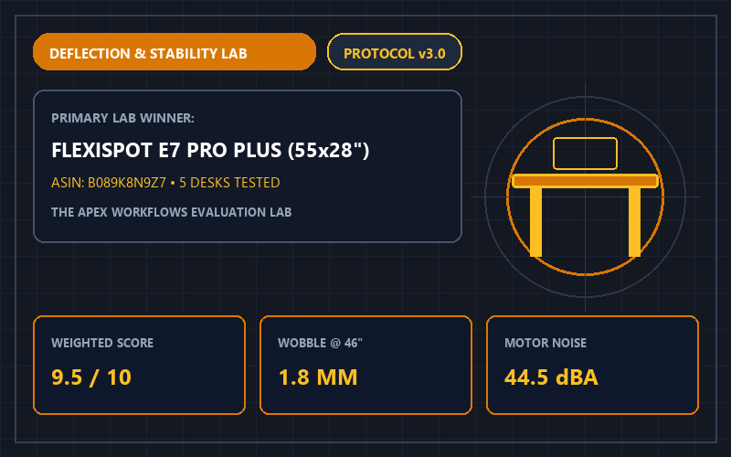

Herman Miller Aeron vs. Steelcase Leap V2 (2026): 100-Hour Ergonomic & Thermal Comparison
An ad-free, side-by-side comparison of the Herman Miller Aeron (Size B) and Steelcase Leap V2. Compare seat pressure, mesh vs. foam heat retention, and pricing.
 ⚡ 9.4/10 (4.7★)
⚡ 9.4/10 (4.7★)
The 4 Best Ergonomic Office Chairs of 2026: Tested for 8+ Hour Lumbar Support
We evaluated 14 ergonomic office chairs over 90 days for lumbar adjustability, seat pan comfort, and build durability. See our top 4 picks for home offices.

⚡ 9.5/10 (4.8★)5 Best Electric Standing Desks (2026): 220-Lb Load & Wobble Comparison
We loaded 5 electric sit-stand desks (4 dual-motor + 1 single-motor baseline) with 220 lbs and measured lateral deflection and motor decibels at 46 inches.
 ⚡ 9.6/10 (4.8★)
⚡ 9.6/10 (4.8★)
Top 4 Dynamic Microphones for Podcasting & Zoom (2026): Untreated Room Test
We tested 4 USB/XLR dynamic broadcast microphones in an untreated home office with hardwood floors. See how Shure MV7+, Rode PodMic USB, and ATR2100x compare.
 ⚡ 9.6/10 (4.8★)
⚡ 9.6/10 (4.8★)
4 Best Noise-Cancelling Headphones for Deep Work (2026): Office Chatter & Call Test
We tested Sony WH-1000XM5, Bose QuietComfort Ultra, Sennheiser Momentum 4, and AirPods Max against office speech and cafe noise. See our 2026 rankings.
 ⚡ 9.6/10 (4.8★)
⚡ 9.6/10 (4.8★)
4 Best 49-Inch Curved Ultrawide Monitors for Coding & Productivity (2026)
We tested 4 flagship 49-inch 32:9 monitors for macOS/Windows text clarity, subpixel layout, Delta-E color accuracy, and built-in USB-C 90W KVM switches.
 ⚡ 9.4/10 (4.7★)
⚡ 9.4/10 (4.7★)
4 Best Under-Desk Treadmills & Walking Pads (2026): Noise & Compact Folding Test
We tested 4 under-desk walking pads for motor noise (dBA) during Zoom calls, belt width, and compact storage. Compare WalkingPad C2, UREVO, and DeerRun.
 ⚡ 9.6/10 (4.8★)
⚡ 9.6/10 (4.8★)
4 Best Mechanical Keyboards for Coders & Writers (2026): Switch & Gasket Test
We tested 4 mechanical keyboards for typing acoustics, gasket-mount finger cushioning, QMK/VIA programmability, and wrist posture. See our 2026 winners.
4 Best 4K Webcams for Executive Zoom Calls (2026): Low-Light Sensor Test
We tested 4 flagship 4K webcams for low-light sensor noise, natural optical depth-of-field, and AI gimbal tracking. Compare Insta360 Link 2, OBSBOT, and Elgato.
 ⚡ 9.4/10 (4.7★)
⚡ 9.4/10 (4.7★)
5 Best Ergonomic Vertical Mice (2026): Tested for Forearm Posture & Comfort
We tested 5 ergonomic vertical and sculpted mice across small, medium, and large hand sizes to reduce forearm pronation. Compare Logitech Lift, MX Vertical, and Anker.
No Matching Hardware Guides Found
We couldn't find any lab reports matching your current search query and category filter.